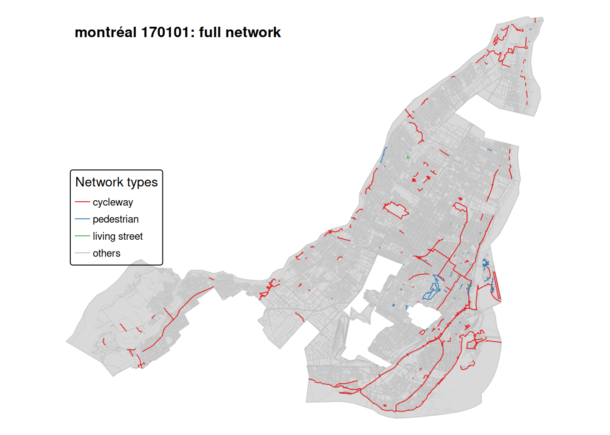
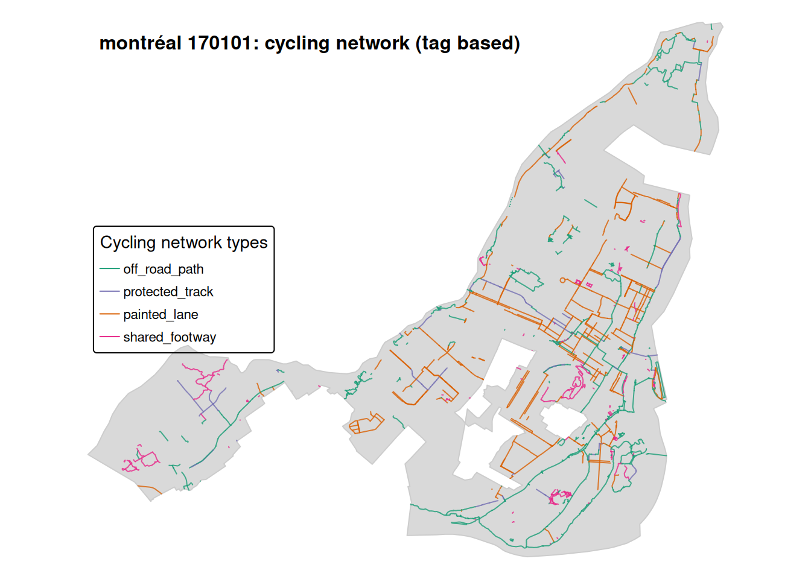
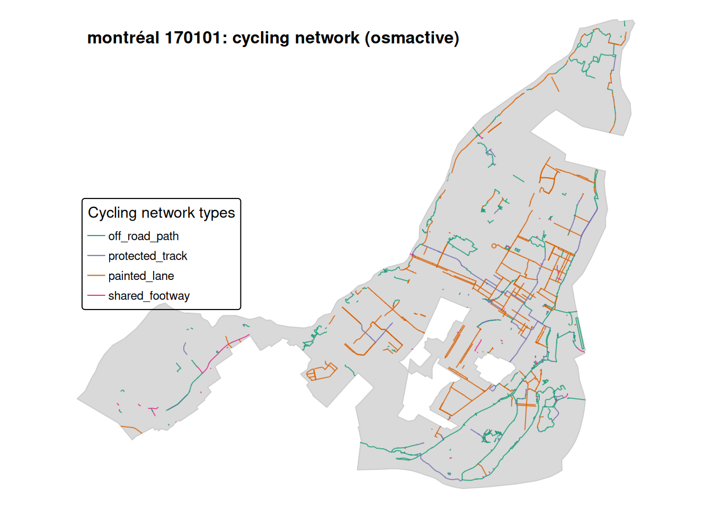
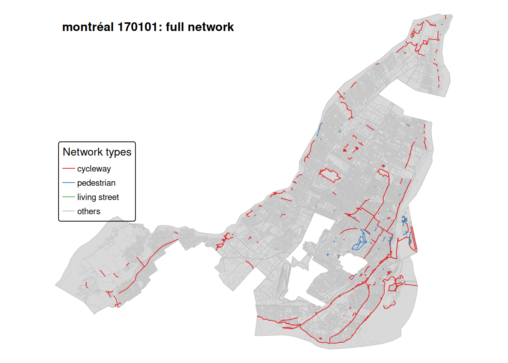
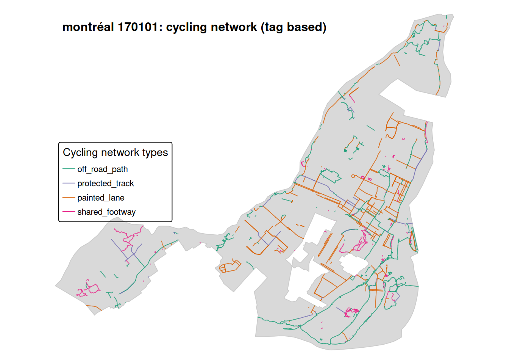
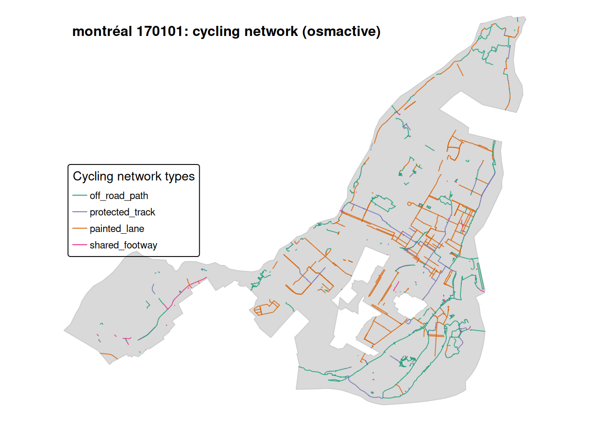

This repository shows how to extract, classify, and map historical OpenStreetMap (OSM) street networks for a city.
The workflow has two main components:
(1) classification of the full street network, and
(2) classification of the cycling network using two alternative methods.
We first download the complete OSM street network for the selected city and snapshot using
osmactive::get_travel_network() (which internally relies on osmextract::oe_get(), but is fully handled by osmactive).
Each street segment is then assigned to one of four broad categories using only the value of the highway tag:
highway = cyclewayhighway = pedestrianhighway = living_streetThis provides a simple, high-level overview of the street network.
At this stage we do not include on-road cycling infrastructure appearing on other road types
(e.g. cycleway = lane, cycleway = track, bicycle = designated).
These elements are classified later as part of the cycling network.
We next build a cycling-specific network from OSM, classifying links into a simplified scheme
stored in the variable infra_simple, which includes:
We implement this using two alternative methods, allowing results to be compared.
In the second method, we rely on the osmactive package’s internal cycling classification.
osmactive returns a more detailed set of infrastructure types for cycling links.
We then map these detailed osmactive classes onto the same four infra_simple categories used in the custom tag-based method.
This provides a convenient, package-based classification that can be compared directly with our own tag-based scheme.
The workflow runs one city and one historical OSM snapshot at a time.
The repository consists of six R scripts:
R/00_setup.R # city tag, city name, file paths, infra_region, snapshot_versionR/01_get_boundary.R # build city perimeterR/02_get_infrastructure.R # download / load OSM travel networkR/03_full_network.R # classify full street network (highway groups)R/04_cycling_network.R # build and classify cycling networks (two methods)R/05_city_maps.R # plotting functions (full and cycling maps)In the example, we use the 2016 OSM snapshot for Montréal, Canada.
R/00_setup.R)Edit these lines:
city_name <- "Montréal"
city_tag <- "montréal"
city_boundary_place <- "Montréal, Canada"
# Region used by osmextract::oe_get() (must fully contain the city)
infra_region <- "Québec"
# Default historical OSM snapshot
snapshot_version <- "170101" # e.g. ~2016To switch city (and its default year), change these values. For example, for Paris around 2023:
city_name <- "Paris"
city_tag <- "paris"
city_boundary_place <- "Paris, France"
infra_region <- "Ile-de-France"
snapshot_version <- "240101" # e.g. ~2023We work with historical OSM snapshots identified by version codes, for example:
“170101” → approx 2016
“240101” → approx 2023
Run:
source("R/00_setup.R")
source("R/01_get_boundary.R")
source("R/02_get_infrastructure.R")
build_city_boundary()
# Download the network for the snapshot defined in snapshot_version:
get_osm_infrastructure()
# (you can override it if needed: get_osm_infrastructure(version = "170101"))This creates:
data/<city_tag>/<city_tag>_<version>_lines.gpkg
You only need to download each city–version combination once.
source("R/03_full_network.R")
source("R/04_cycling_network.R")
source("R/05_city_maps.R")
# Full street network (4 highway groups)
plot_city_map_full_tm()
# Cycling network (custom tag-based classification)
plot_city_map_cycling_tag_tm()
# Cycling network (osmactive-based classification)
plot_city_map_cycling_osmactive_tm()Change city and default year: update city_name, city_tag, city_boundary_place, infra_region, and snapshot_version in R/00_setup.R.
Download: run build_city_boundary() and get_osm_infrastructure() once per city–snapshot.
Plot: use plot_city_map_full_tm(), plot_city_map_cycling_tag_tm(), and plot_city_map_cycling_osmactive_tm().
The rest of the workflow adapts automatically.


